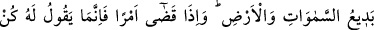
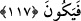

vardır. Çünkü çocuk babasının cinsinden olur. Oysa Allah hiçbir şeye muhtaç olmayan
hiçbir şeye benzemeyen bir ve tek varlıktır. Nitekim Mesnevî’de gelmiştir:
Doğurmamıştır, doğrulmamıştır. Çünkü Kadîmdir.
O, hiçbir kimsenin ne babası, ne oğlu, ne de amcasıdır.
Âyetin devamında: “Göklerde ve yerde olanların hepsi O’nundur.” denilerek buna
işâret edilmiştir. Yâni mesele onların zannettikleri gibi değildir, Allah Teâlâ yerde ve
gökte olan her şeyin yaratıcısıdır. Ve bunlar içerisine melekler, Üzeyr ve Îsâ da dâhildir.
Dolayısıyla yerdeki ve gökteki varlıklardan hiçbirinin Allah’ın çocuğu olması mümkün
değildir.
“Hepsi O’na boyun eğmiştir.” Yerde ve gökte canlı-cansız, âlim-câhil her şey
Allah’a boyun eğmiştir. O’nun irâdesinin ve yaratmasının dışına çıkamaz. Bu vasıflara
sahib olan şeyler ise yaratıcılarına benzer olamazlar. Oysa çocuğun babasına benzemesi
gerekir. Bu da Allah’ın hiçbir şekilde çocuk sahibi olmadığını gösterir. Âyette önce
“yerde ve göklerde olan herşey” denilerek aklı olmayanlar için kullanılan bir ifâde
kullanılmış, sonra da akıllılar için kullanılan bir kalıpla: “Hepsi O’na boyun eğmiştir.”
denilmiştir. Bu, Allah’a oğul isnâd eden akıl sâhiblerine hakaret için uygulanmış bir
yöntemdir.
117. (O) göklerin ve yerin eşsiz yaratıcısıdır. Bir şeyi dilediğinde ona sadece
“Ol!” der, o da hemen oluverir.
“Göklerin ve yerin yaratıcısıdır.” Yeri ve göğü daha önce bir benzeri olmaksızın,
modelsiz yaratandır. Âyette geçen “ibdâ” kelimesi, bir şeyi maddeye ve zamana bağlı
olmaksızın îcâd etmek, yaratmak anlamınadır. Bu nedenle hevâ sâhibi kişilere bid’at
ehli denmiştir ki, şerîatte daha önce benzeri olmayan bir şey yapan anlamınadır. Âyetin:
“Yeri ve gökleri eşsiz olan” anlamında olması da mümkündür. Bu âyette Allah’ın çocuk
sahibi olmadığına işâret vardır. Çünkü baba, kendisinden ayrılan çocuğun ana
maddesidir. Allah ise mutlak anlamda her şeyin yaratıcısıdır. O bir şey, olmaktan
münezzehtir. Öyleyse O, baba olamaz. Zira yeri ve göğü maddesiz yaratan, nasıl olur da
Îsâ’yı babasız yaratmaya kâdir olamaz?
“Bir şey yaratmak istedi mi ona sadece ol! der, o da hemen (hiçbir, gecikme ve geri
kalma olmaksızın) oluverir.”
Ehl-i sünnet, eşyânın yaratılmasını “kün=ol!” emrine bağlamazlar. Bilâkis eşyânın
varlığı, Allah’ın halk, îcâd ve tekvîn gibi ezelî sıfatlarına bağlıdır. Bu söz ise eşyânın
Allah’ın îcâd ve ezelî kudreti ile ne kadar sür’atli yaratıldığını göstermektedir. Fakat